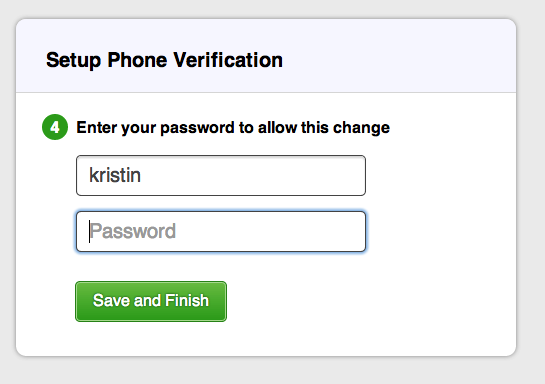

Quick question? Get fast answers on Twitter.
Tweet a question to @37signals for a quick answer between – Mon–Fri.
Add another layer of security to your account by enabling phone verification. Every time you sign in, we'll send a text message to your mobile phone with a verification code. You can also verify your sign in with a phone call.
Phone verification will be applied to all the accounts you access with your ID. You'll also be prompted for a security code on mobile devices.
Click Me, and then Update your personal info.
Scroll to the bottom and click "Add your mobile phone to this account"
Enter your phone number, and pick your security questions. We'll use the answers to sign you in if you're without your phone.

Verify your phone with the code we send you.
Verify your password. 
You'll then see a confirmation page
On the code verification page, click to get a code from our support staff and then follow the verification instructions.
If you don't want to use phone verification any more, turning it off is easy.
From your identity edit page, scroll down and click "Turn-off phone verification"
If you're sure, click "Yes, turn off phone verification"
Enter your password to confirm.
You'll see a confirmation screen and receive a confirmation email.
Read more about security here.
Great job, you reached the end of the guide! Have you read all of them?
Tweet a question to @37signals for a quick answer between – Mon–Fri.
For in-depth questions, you can file a support ticket to get answered personally by us.